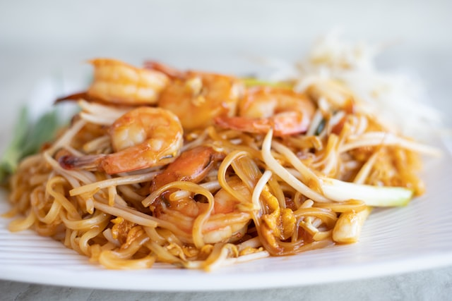

Pad Thai

Description
Pad Thai is a Thai dish of stir-fried rice noodles with eggs, vegetables and tofu in a sauce of tamarind, fish, dried shrimp, garlic, red chilli pepper and sugar. Some of the ingredients are provided on the side as condiments, including red chilli pepper, lime wedges and peanuts.
- 8 ounces flat rice noodles
- 3 Tablespoons oil
- 3 cloves garlic , minced
- 8 ounces uncooked shrimp, chicken, or extra-firm tofu , cut into small pieces
- 2 eggs
- 1 cup fresh bean sprouts
- 1 red bell pepper , thinly sliced
- 3 green onions , chopped
- 1/2 cup dry roasted peanuts
- 2 limes
- 1/2 cup Fresh cilantro , chopped